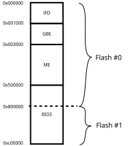

Lenovo Ivy Bridge series
This information is valid for all supported models, except T430s, T431s and X230s.
Flashing coreboot
Type |
Value |
|---|---|
Socketed flash |
no |
Size |
8 MiB + 4MiB |
In circuit flashing |
Yes |
Package |
SOIC-8 |
Write protection |
No |
Dual BIOS feature |
No |
Internal flashing |
Yes |
Installation instructions
Update the EC firmware, as there’s no support for EC updates in coreboot.
Do NOT accidentally swap pins or power on the board while a SPI flasher is connected. It will permanently brick your device.
It’s recommended to only flash the BIOS region. In that case you don’t need to extract blobs from vendor firmware. If you want to flash the whole chip, you need blobs when building coreboot.
The Flash layout shows that by default 7MiB of space are available for the use with coreboot.
In that case you only want to use a part of the BIOS region that must not exceed 4MiB in size, which means CONFIG_CBFS_SIZE must be smaller than 4MiB.
ROM chip size should be set to 12MiB.
Please also have a look at Flashing firmware tutorial.
Splitting the coreboot.rom
To split the coreboot.rom into two images (one for the 8MiB and one for the 4 MiB flash IC), run the following commands:
dd of=top.rom bs=1M if=build/coreboot.rom skip=8
dd of=bottom.rom bs=1M if=build/coreboot.rom count=8
That gives one ROM for each flash IC, where top.rom is the upper part of the flash image, that resides on the 4 MiB flash and bottom.rom is the lower part of the flash image, that resides on the 8 MiB flash.
Dumping a full ROM
If you flash externally you need to read both flash chips to get two images (one for the 8MiB and one for the 4 MiB flash IC), and then run the following command to concatenate the files:
cat bottom.rom top.rom > firmware.rom
Flash layout
There’s one 8MiB and one 4 MiB flash which contains IFD, GBE, ME and BIOS region. These two flash ICs appear as a single 12MiB when flashing internally. On Lenovo’s UEFI the EC firmware update is placed at the start of the BIOS region. The update is then written into the EC once.

Reducing Intel Management Engine firmware size
It is possible to reduce the Intel ME firmware size to free additional
space for the bios region. This is usually referred to as cleaning the ME or
stripping the ME.
After reducing the Intel ME firmware size you must modify the original IFD,
split the resulting coreboot ROM and then write
each ROM using an external programmer.
Have a look at me_cleaner for more information.
Tests on Lenovo W530 showed no issues with a stripped and shrunken ME firmware.